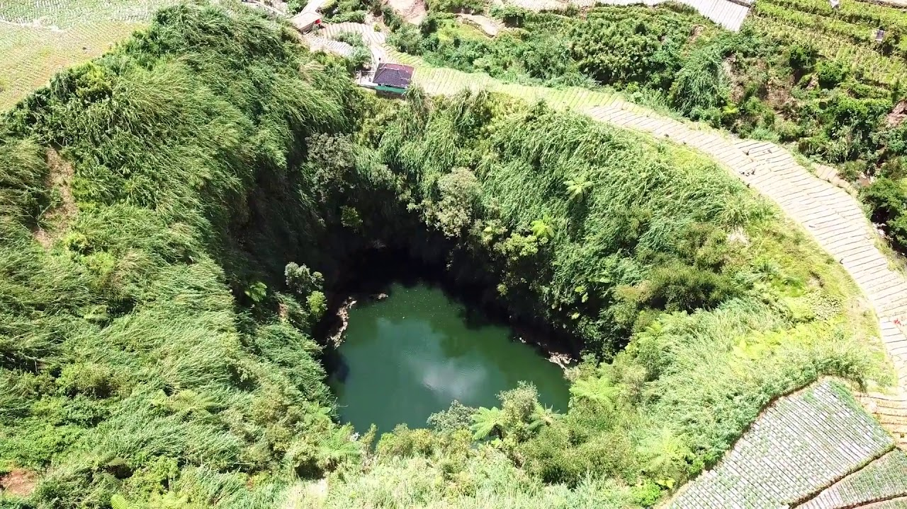

Sumur Jalatunda
Lokasi
Di Desa Pekasiran, Kecamatan Batur, Kabupaten Banjarnegara, terdapat sebuah sumur berukuran raksasa. Sumur ini bernama Sumur Jalatunda. Disebut raksasa karena sumur ini memiliki diameter sepanjang 90 meter. Sementara, kedalaman sumur diperkirakan lebih dari 100 meter. Sumur Jalatunda merupakan celah yang terbentuk saat terjadinya letusan dahsyat Gunung Prahu Tua – bersamaan dengan terbentuknya Dataran Tinggi Dieng.
Mitos Dan Kepercayaan
Ada sebuah mitos yang dipercaya masyarakat sekitar mengenai sumur ini. Jika ada yang mampu melempar batu hingga ke sisi di seberang, melintasi permukaan sumur, dipercaya permintaan orang tersebut akan terkabul. Mitos tersebut pula yang menjadi dasar pemberian nama pada sumur ini. “Jala” berarti jaring, sementara “tunda” berarti yang belum terlaksana. Jika diartikan, Sumur Jalatunda berarti sumur yang dapat menampung semua permintaan yang selama ini tertunda. Selain itu, ada beberapa cerita mengenai sumur ini. Menurut kepercayaan masyarakat setempat, sumur ini merupakan pintu menuju Sapta Pratala (bumi lapis ketujuh). Sementara, terkait dengan epos Mahabarata, sumur ini merupakan tapak tumit Bima ketika bertarung melawan naga raksasa.
Transportasi
Sumur Jalatunda dibuka untuk umum setiap hari dari jam 07.00 WIB sampai jam 16.00 WIB. Tiket masuk ke tempat wisata ini Rp5.000 per orang. Sebagai catatan, jalan menuju tempat wisata ini kurang bagus. Sebaiknya tidak menggunakan kendaraan jenis sedan jika ingin berkunjung ke tempat ini.